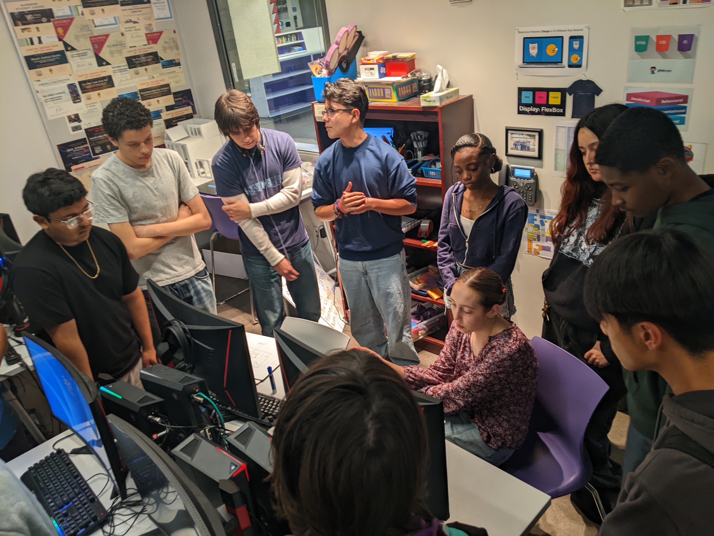
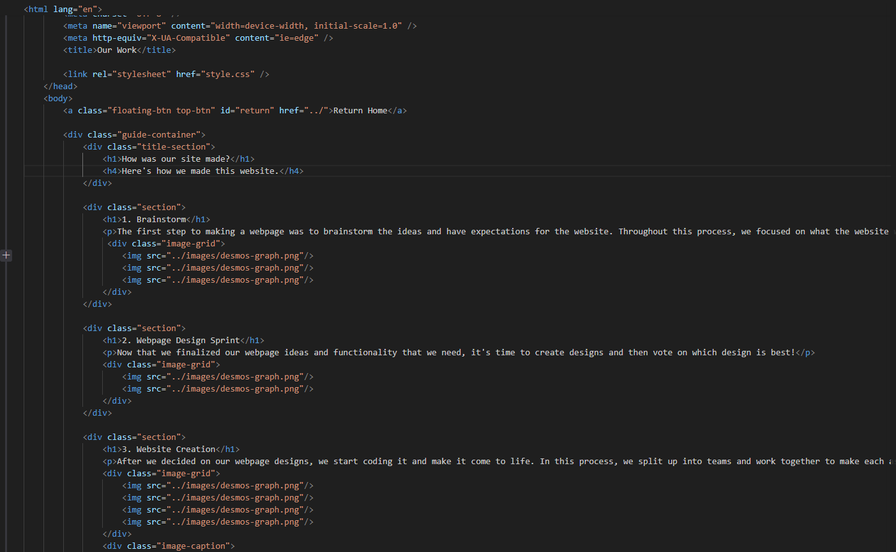
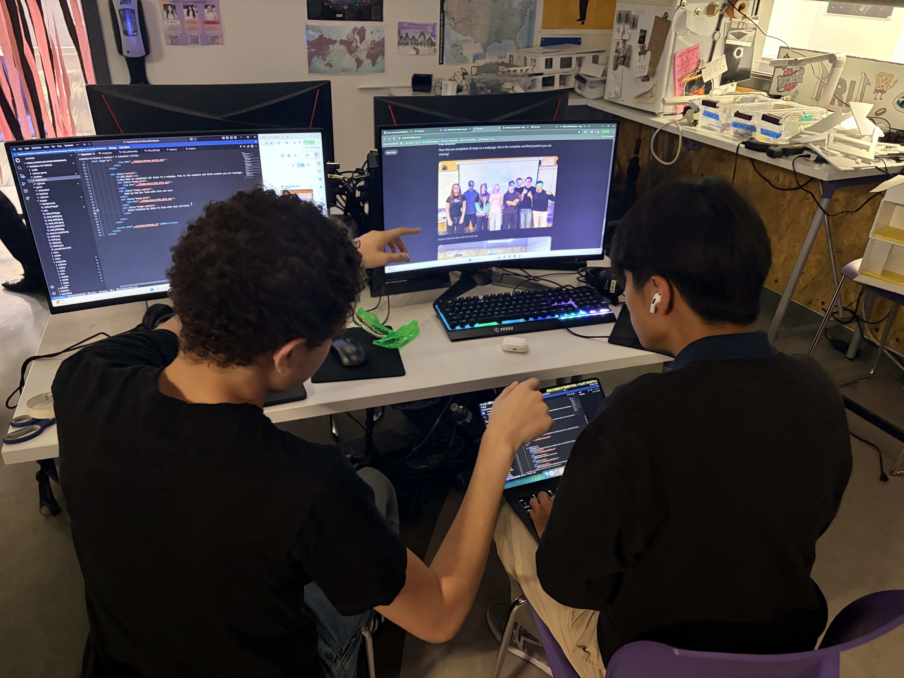
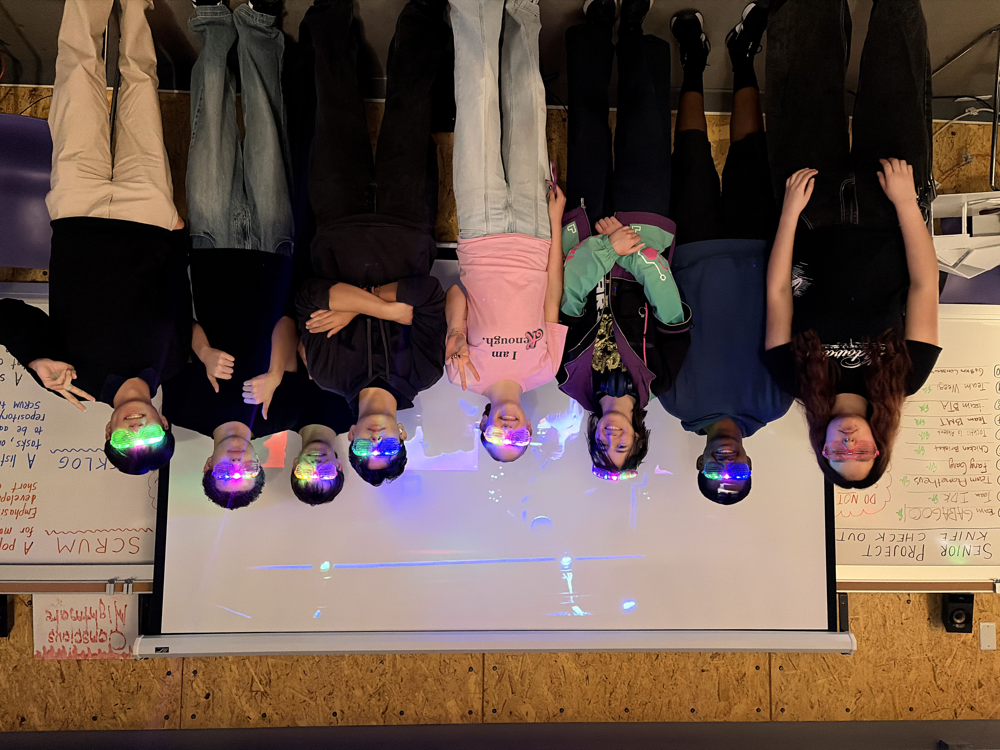
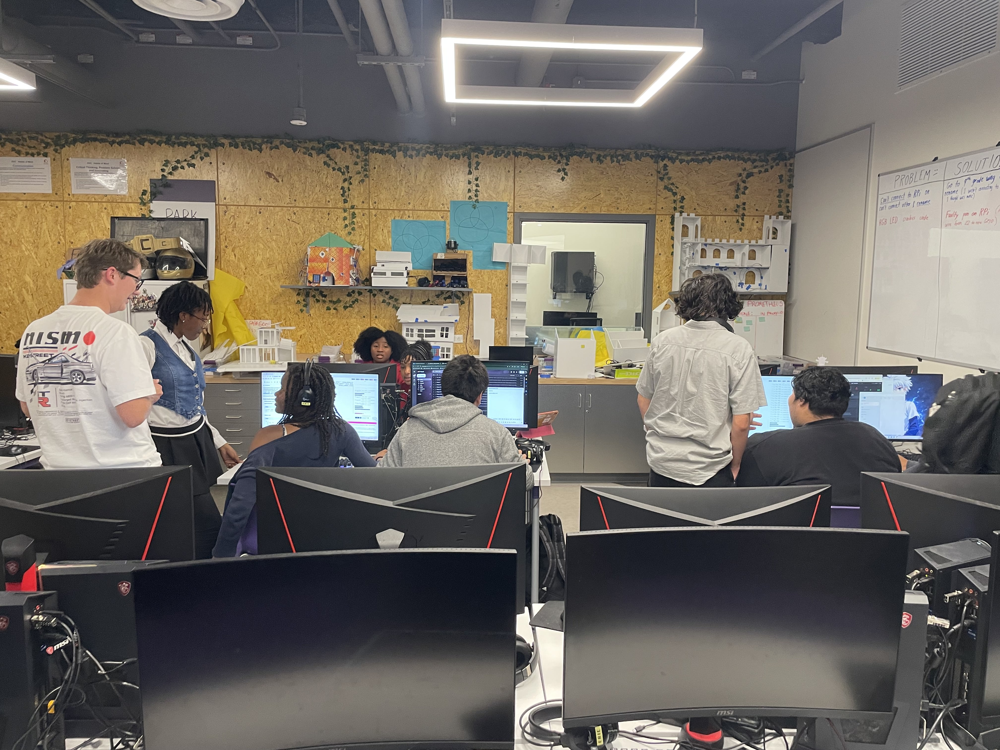

How was our site made?
Here's how we made this website.
1. Brainstorm
The first step to making a webpage was to brainstorm the ideas and have expectations for the website. Throughout this process, we focused on what the website will look like.


2. Webpage Design Sprint
Now that we finalized our webpage ideas and functionality that we need, it's time to create designs and then vote on which design is best!
.png)
.png)
.png)
3. Website Creation
After we decided on our webpage designs, we start coding it and make it come to life. In this process, we split up into teams and work together to make each assigned webpage.

.png)
.png)
We coded our website using HTML and CSS while utilizing JavaScript to make it functional. The website is all hosted on GitHub.
4. Iterations
After receiving feedback, we then implement all feedback given for our website and finalize the website

All Done!
Now that we completed all steps to a webpage, this is the complete and final product you are viewing!

Made by Web Dev team with love and care

Music Produced by Sonic Pi team with soul and heart